Move a graph, write the equation
A.
Move a graph up 2 units
|
Move the original graph y=x
up 2 units. The resultant graph is y=x+2.
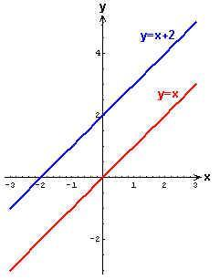
|
Move the original graph y=Abs(x)
up 2 units. The resultant graph is y=Abs(x)+2.
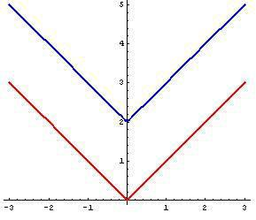 |
|
Move the original graph y=x2
up 2 units. The resultant graph is y=
x2+2 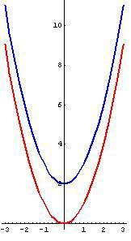 |
Move the original graph y=sin(x)
up 2 units. The resultant graph is y=2+sin(x).
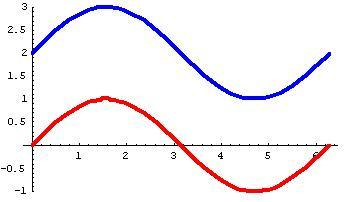 |
|
Move the original graph y=x3
up 2 units. The resultant graph is y=
x3+2.
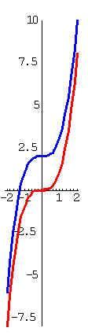 |
Move the original graph of the circle
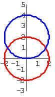 |
|
Move the original graph of the ellipse x2/9
+ y2/4 = 1 up 2 units. The resultant graph is the
ellipse x2/9 + (y-2)2/4 = 1
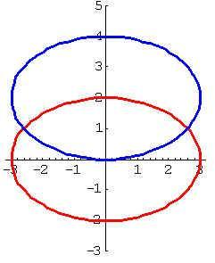 |
Move the original graph of the hyperbola x2/9 - y2/4 = 1 up 2 units. The resultant graph is the hyperbola
x2/9
- (y-2)2/4 = 1 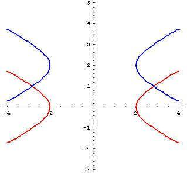 |
|
Move the original graph of the exponential
function y=2x up 2 units.
The resultant graph is the exponential function
y= 2x
+ 2.
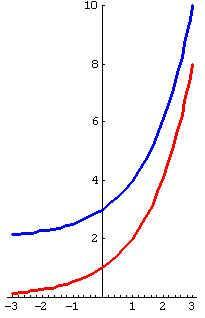
|
|
Move the graph to right 2 units:
|
Move the original
graph y
=x to the right 2 units. The resultant graph is y =x- 2. 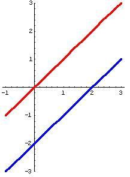 |
Move the original
graph y
= lxl to the right 2 units. The resultant graph is y = lx- 2l. 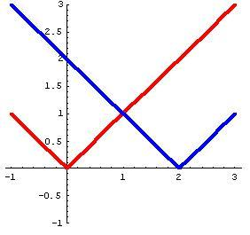 |
|
Move the original graph y =x2 to the right 2 units. The resultant graph is y = (x - 2)2. 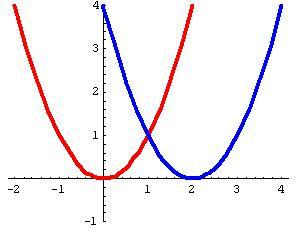 |
Move the original
graph y
=sin(x) to the right 2 units. The resultant graph is
y =
sin(x-2). 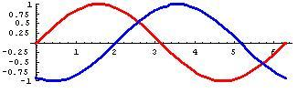 |
|
Move the original
graph y
= x3 to the right 2 units. The resultant graph is y = (x
� 2)3.
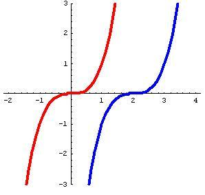 |
Move the original
graph of the circle x2 + y2 = 9 to
the right 2 units. The resultant graph is the circle (x
- 2)2 + y2 = 9. 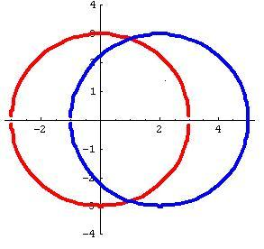 |
|
Move the original
graph of the ellipse x2/9 +
y2/4 =
1 to the right 2 units. The resultant graph is the ellipse
(x-2)2/9 + y2/4 = 1 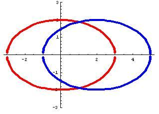 |
Move the original
graph of the hyperbola x2/9 - y2/4 =
1 to the right 2 units. The resultant graph is the hyperbola
(x
- 2)2 /9 - y2/4 = 1 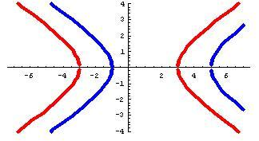 |
|
Move the original graph of the exponential function y=2x to the right 3 units. The resultant graph is the exponential function y
= 2(x-3). 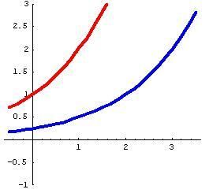 |
Back to Patterns in Mathematics